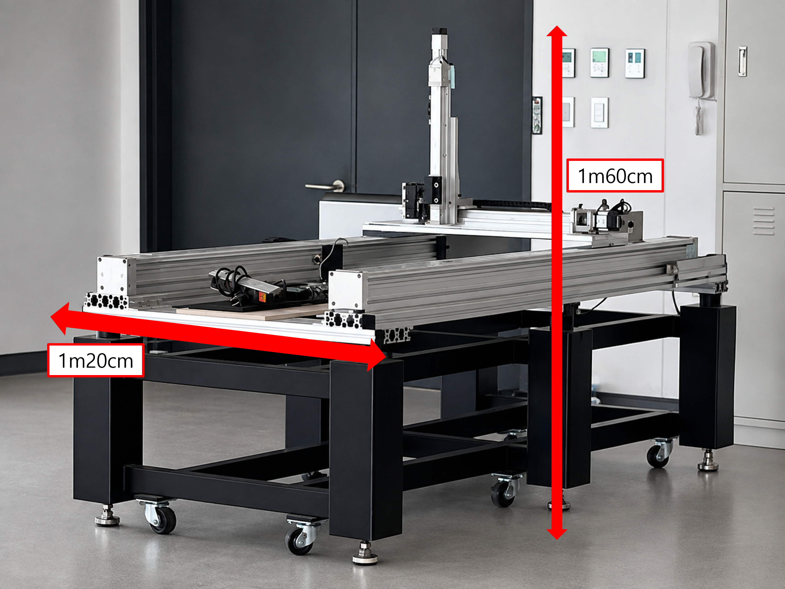
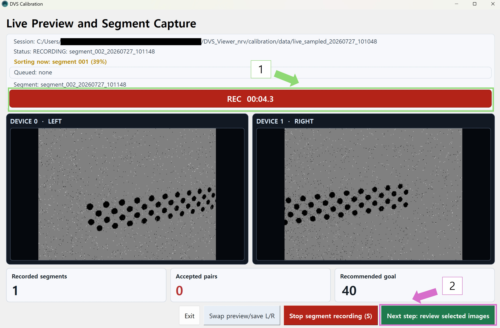
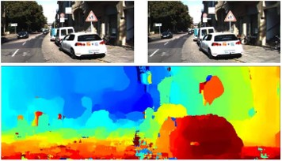
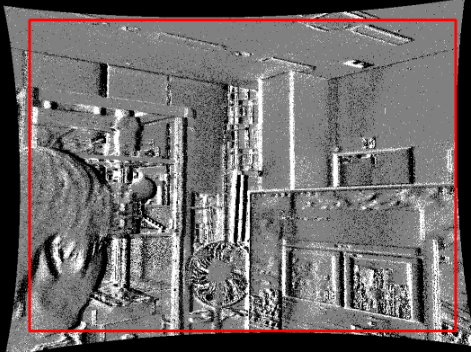
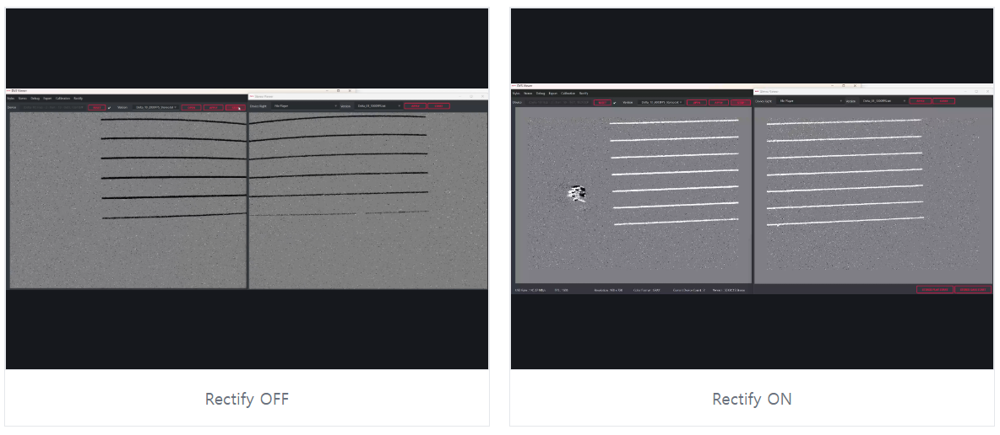
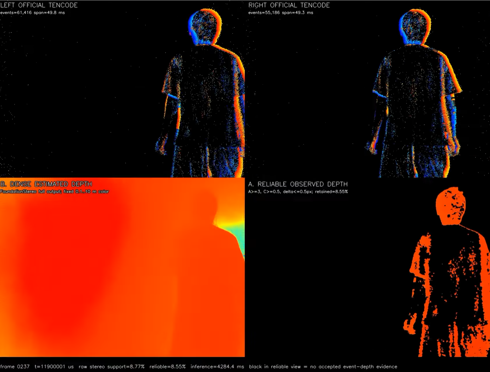

Jay Tech Notes
제가 직접 정리한 기술 글, 실험 기록, 논문 메모를 모아두는 개인 페이지입니다. 상세 페이지가 준비된 카드는 클릭해 각 글과 자료를 확인할 수 있으며, 아직 정리 중인 일부 연구 카드는 현재 방향과 목표를 보여주는 진입점으로 구성했습니다.
LED 모션캡처 드론 제어
연구 계획, Jetson 기반 모션캡처 초기 구현, 리니어 모터를 이용한 정량 검증 계획을 차례로 정리했습니다.
공개 글 묶음SNN 연구 기록
Fashion-MNIST 환경에서 Sensory Adaptation 기반 SNN을 분석한 논문, 포스터, 공개 코드 저장소를 한 묶음으로 정리했습니다.
공개 글 묶음NRV DVS 캘리브레이션
이벤트 카메라 캘리브레이션을 처음 보는 사람도 따라갈 수 있도록 개념, 패턴, 촬영 준비 순서로 정리했습니다.
공개 글 묶음NRV DVS Rectify
정렬이 필요한 이유부터 좌표 보정 원리, Viewer에서 사용하는 절차까지 세 편의 한글 문서로 정리했습니다.
진행 중인 개발 묶음이벤트 비전 스테레오 Depth
FPGA 실시간 정렬과 멀티센서 데이터셋을 바탕으로 이벤트 스테레오 Depth 카메라와 zero-shot 위치 추정을 구현하는 작업입니다.
개발 기록 묶음NRV FPGA 트러블슈팅
NRV FPGA와 카메라 모듈 개발 중 만난 오류를 로그와 검증 결과를 따라가며 해결한 과정을 정리했습니다.
사이드 프로젝트 묶음사이드 프로젝트
캘리브레이션 도구, 실험 타깃, 3D 프린팅 브라켓과 진행 중인 카메라 제품 케이스 제작 기록을 모았습니다.
학습 노트 묶음SoC/FPGA Bus
숭실대 학부생연구인턴에서 정리한 APB, AHB, AXI와 AXI-to-APB Bridge 구현·검증 흐름을 나누어 정리했습니다.
경진대회 노트 묶음경진대회 기술 노트
제가 참여한 두 경진대회에서 진행한 SNN 제어 회로와 YOLOv2 FPGA 가속기의 설계·구현·검증 내용을 대회별 기술 문서로 정리했습니다.
LED 모션캡처 기반 드론 비행경로 제어 시스템 (진행중)
여러 카메라로 드론의 LED 마커를 관측하고, 추정한 위치를 비행경로 제어에 연결하는 졸업논문 연구입니다. 현재는 Jetson과 OV9281 카메라 4대를 연결해 영상 확인, 캘리브레이션, 원점 설정과 체커보드의 3차원 궤적 표시까지 구현했습니다. IR LED 추적과 드론 제어, 리니어 모터 기준 경로를 이용한 정확도 검증은 후속 단계입니다. 중앙대학교 심덕선 교수님의 지도 아래 진행하며, 2026년 10월 논문 정리를 목표로 합니다.
 01
연구 계획 · 드론 모션캡처
01
연구 계획 · 드론 모션캡처
LED 모션캡처 기반 드론 비행경로 제어 연구 계획
다중 카메라 측위를 드론 제어에 연결하기 위한 연구 목표, 시스템 구성과 단계별 검증 계획을 설명합니다.

Jetson 기반 모션캡처 시스템 1차 구현
카메라 연결부터 웹 Viewer, 캘리브레이션, 원점 설정과 체커보드 궤적 추적까지 실제 장비 사진과 동작 영상으로 설명합니다.

03 정량 검증 계획 · 준비 중산업용 리니어 모터 스테이지 기반 경로 검증 환경
리니어 모터 스테이지로 기준 경로를 재현하고, 모션캡처가 검출한 경로와 비교할 계획입니다. 정량 평가 결과와 상세 글은 준비 중입니다.
SNN 연구 노트
Fashion-MNIST 환경에서 Sensory Adaptation 기반 Spiking Neural Network의 안정성을 분석한 논문과 포스터, 그리고 해당 연구에 사용한 공개 코드 저장소를 함께 묶었습니다. 논문 본편은 625-neuron 기준 안정성 분석이고, 후속 확장 연구는 1250-neuron 구조에서 SA 성능을 개선한 결과입니다.


NRV DVS 캘리브레이션 설명
캘리브레이션을 처음 접하는 사람도 전체 흐름을 따라갈 수 있도록 개념, NRV DVS용 패턴, 촬영 준비, 실제 앱 실행 절차로 나누어 정리했습니다. NRV 이벤트 카메라의 캘리브레이션 기능은 제가 직접 구현했으며, 아래의 한글 사용·설명 문서도 직접 작성했습니다.
 01
CAMERA CALIBRATION
01
CAMERA CALIBRATION
카메라 캘리브레이션이란?
카메라 캘리브레이션의 기본 개념, 필요한 이유, 추정되는 파라미터와 모노·스테레오 NRV DVS 적용 방식을 설명합니다.
 02
DVS CALIBRATION METHOD
02
DVS CALIBRATION METHOD
NRV DVS 캘리브레이션 방법
NRV DVS 캘리브레이션에서 밝기 변화와 blinking asymmetric circle grid가 필요한 이유를 설명합니다.
 03
CAPTURE PREPARATION
03
CAPTURE PREPARATION
촬영 환경과 준비
필요한 장비와 모니터 설정, 원 간격 측정, 카메라 고정과 권장 촬영 조건을 설명합니다.

04 CAPTURE & PROCESSING캘리브레이션 촬영 및 처리 절차
직접 구현한 DVS Calibration 앱에서 촬영, 후보 선별, Coverage 확인, 계산과 결과 보관까지 진행하는 방법을 설명합니다.
NRV DVS Rectify 설명
NRV DVS 캘리브레이션에서 구현·정리한 흐름을 이어, 캘리브레이션으로 구한 파라미터를 DVS 영상에 적용해 모노 카메라의 렌즈 왜곡을 보정(undistortion)하고, 스테레오 영상에서는 왜곡 보정과 함께 좌우 대응점을 같은 높이로 정렬하는 이유와 처리 원리를 정리했습니다. 실제 Viewer에서 Rectify 기능을 사용하는 방법까지 세 편의 한글 문서로 설명합니다.

01 REAL-TIME RECTIFICATIONDVS 정렬이 필요한 이유
렌즈 왜곡과 카메라 배치 차이를 보정하고, 좌우 대응점을 같은 scanline에 놓아야 하는 이유를 설명합니다.

02 RECTIFICATION PRINCIPLEDVS 정렬 처리 원리
캘리브레이션 파라미터, remap 좌표와 nearest-neighbor 방식으로 이벤트 픽셀을 옮기는 처리 흐름을 설명합니다.

03 VIEWER WORKFLOWViewer에서 정렬 사용하기
Viewer에서 캘리브레이션 파일을 불러오고, 실시간 Rectify 결과를 확인하는 절차를 설명합니다.
이벤트 비전 스테레오 Depth 카메라 (진행중)
이벤트 카메라 스테레오로 장면의 깊이를 추정하는 Depth 카메라를 개발하고 있습니다. 캘리브레이션 파라미터를 FPGA에 적용해 좌우 이벤트 영상을 실시간으로 정렬·보정하고, 주행·동적 장면의 이벤트 카메라·LiDAR·일반 RGB 데이터를 함께 기록해 융합 데이터셋을 구축합니다. 이 처리 흐름을 바탕으로 실시간 Depth와 제로샷 위치 추정 기능까지 연결하는 것이 목표입니다.
FPGA 실시간 스테레오 정렬·보정
직접 구현한 캘리브레이션 앱의 파라미터를 FPGA에 적용해 왜곡 보정과 스테레오 정렬을 실시간 처리하고, 실제 카메라 제품과 Depth 처리로 연결합니다.
이벤트 카메라·LiDAR·RGB 융합 데이터셋
주행·동적 장면의 이벤트, LiDAR 거리, 일반 RGB 영상을 동기화해 기록하는 프로젝트에 팀원으로 참여하고 있습니다. 데이터셋은 스테레오 Depth와 제로샷 위치 추정 기능 개발에 활용할 계획입니다.

03 STEREO DEPTH DEMONRV 이벤트 스테레오 Depth 데모
NRV 스테레오 이벤트 카메라만으로 Depth를 처리한 영상입니다. FPGA 실시간 정렬과 센서 융합 파이프라인을 연결해 이와 같은 결과를 실시간으로 구동하는 것이 목표입니다.
YouTube 영상 보기 →NRV FPGA 트러블슈팅 노트
NRV FPGA와 카메라 모듈 개발 중 직접 확인한 오류를 증상, 로그, 가설, 확인, 원인, 해결, 검증 순서로 정리합니다. 단순한 해결 명령보다 같은 증상이 생겼을 때 원인을 다시 좁힐 수 있는 판단 근거를 남깁니다.


사이드 프로젝트 링크
본문 기술 노트와 함께 볼 수 있는 개인 사이드 프로젝트를 모았습니다. 공개 코드와 사용법은 각 저장소에서, 제작 과정은 연결된 상세 페이지에서 확인할 수 있습니다.
 01
Calibration target
01
Calibration target
blinking-circle-grid-for-dvs-calibration
NRV DVS 캘리브레이션에 사용할 blinking asymmetric circle grid 패턴을 모니터에 표시하기 위한 프로젝트입니다.
 02
Event camera target
02
Event camera target
event-arduino-stopwatch-target
이벤트 카메라 실험에서 시간 변화가 있는 타깃을 구성하고 확인하기 위한 Arduino 기반 스톱워치 타깃 프로젝트입니다.
 03
3D printed bracket
03
3D printed bracket
stereo-fpga-camera-bracket
스테레오 이벤트 카메라 모듈과 FPGA 보드를 고정하고 기준 거리 조절을 위해 직접 설계·출력한 3D 프린팅 브라켓의 설계와 조립 기록입니다.
 04
04
신규 카메라 모듈 제품 케이스 제작
(진행중)
직접 제작한 3D 더미 모델과 프린팅 시제품으로 치수·조립·발열 구조를 확인하고, 금속 제품 케이스 제작을 진행하는 과정을 정리했습니다.
SoC/FPGA 학습 노트
숭실대학교 차세대반도체학과 동계 학부생연구인턴에서 학습한 APB, AHB, AXI bus protocol과 AXI-to-APB Bridge 최종 프로젝트를 수업자료, Lab 파형, 최종 RTL 검증 결과 기준으로 나누어 정리했습니다. 첫 화면에서는 각 개념으로 들어가는 입구만 제공하고, 자세한 설명은 개별 페이지에서 확인할 수 있습니다.
APB Control Bus
Lab2~4에서 진행한 APB register, SRAM, interrupt 실습과 setup-enable timing을 설명합니다.
02 AHB PIPELINEAHB Pipelined Bus
Lab5~6의 AHB register/SRAM 실습을 바탕으로 address/data phase와 HREADY timing을 정리합니다.
03 AXI CHANNELSAXI Channel Bus
Lab7 AXI slave 실습을 기준으로 AW/W/B, AR/R channel과 VALID/READY handshake를 설명합니다.
04 BUS BRIDGEAXI-to-APB Bridge
최종 프로젝트의 AXI-to-APB protocol conversion, Verilog FSM, testbench, PASS 로그를 정리합니다.
경진대회 기술 노트
제가 참여한 두 경진대회의 문제 정의, 입력 표현, 하드웨어 구조와 검증 결과를 프로젝트별 네 편으로 나누어 설명합니다.
SNN 기반 BallControl 제어 회로
30×30cm 보드 위 공의 위치를 중앙으로 이동시키는 BallControl 과제를 SNN 제어 문제로 모델링한 프로젝트입니다. 위치는 99개 one-hot 입력, 무게는 rate encoding으로 표현하며, 99→32→4 뉴런 구조가 네 방향 제어 이벤트를 생성합니다. 네트워크 시뮬레이션, 합성 결과와 전력 추정 자료를 포함하며, 카메라와 모터를 연결한 물리 폐루프 검증은 이 프로젝트의 검증 범위에 포함하지 않았습니다.
프로젝트 개요
대회 문제, 99→32→4 구조, 구현 범위와 검증 경계를 요약합니다.
02 INPUT & OUTPUT입력 표현과 출력 정의
보드 좌표와 공의 무게를 one-hot·rate encoding 입력으로 정의하는 방법을 설명합니다.
03 SNN RTL DESIGNSNN 제어 회로와 RTL
LIF 막전위 갱신, FSM, 4채널 출력과 Verilog 모듈의 관계를 설명합니다.
04 SIMULATION & VERIFICATION시뮬레이션과 구현 결과
one-shot과 무게 반영 입력, 합성·전력 결과와 검증 한계를 제시합니다.
YOLOv2 Full-Graph FPGA 가속기
256×256 RGB 입력에서 60개 클래스를 검출하는 YOLOv2를 정수화하고, Conv·Pool·Route·Upsample과 두 detection head를 하나의 FPGA 실행 경로로 구성한 프로젝트입니다. 최종 RTL의 22개 descriptor와 144개 packed MAC lane을 기준으로 하며, 229장 전체 평가의 속도와 detector mAP를 결과 지표로 사용했습니다.
프로젝트 개요
정수 모델, FPGA 두 검출 경로, 최종 수치와 담당 범위를 요약합니다.
02 INTEGER QUANTIZATION정수 양자화 설계
32장 calibration과 mAP 평가를 사용한 INT8·INT32·requantization 조건을 설명합니다.
03 FPGA ARCHITECTUREFull-graph 구조
22개 descriptor, DDR 데이터 배치, 144-lane MAC과 두 detection head의 연결을 설명합니다.
04 BOARD VERIFICATION229장 보드 검증
단일 이미지 점검, 229장 평가, mAP·속도·timing·자원 결과를 제시합니다.